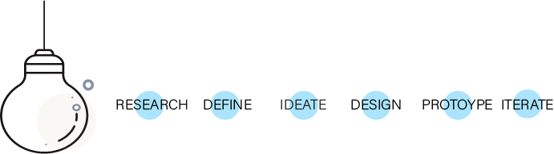
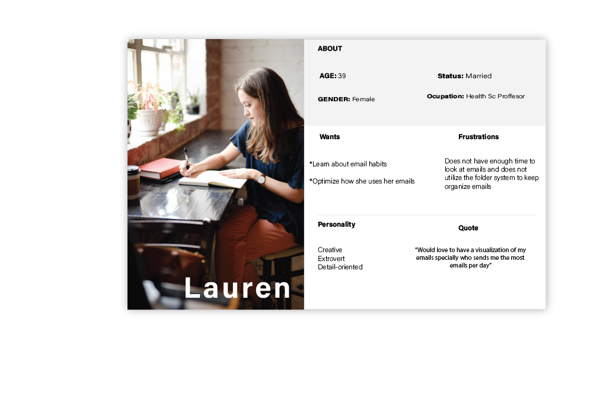
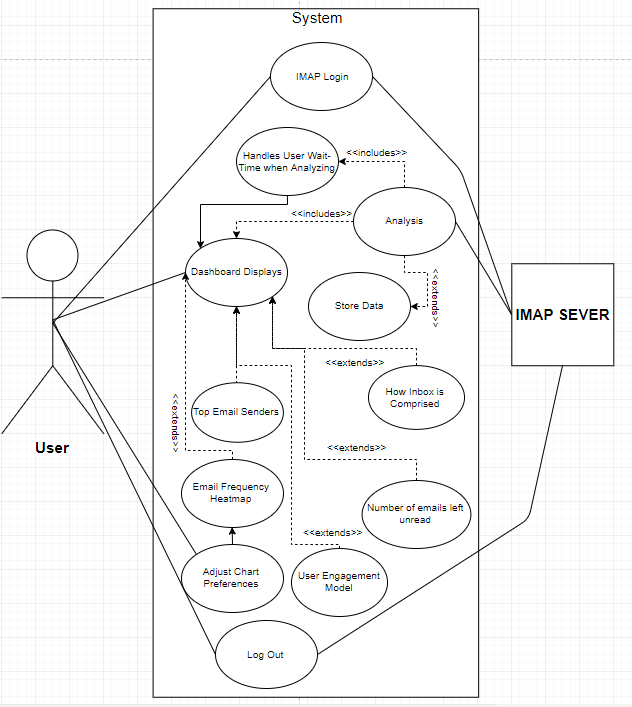
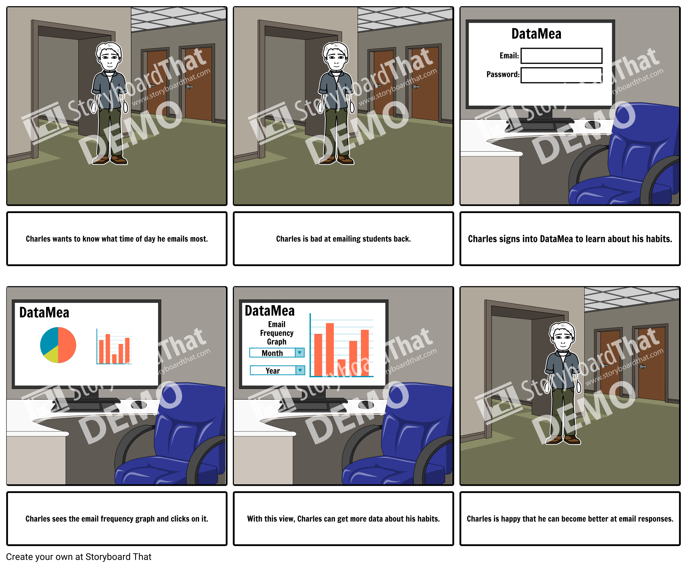
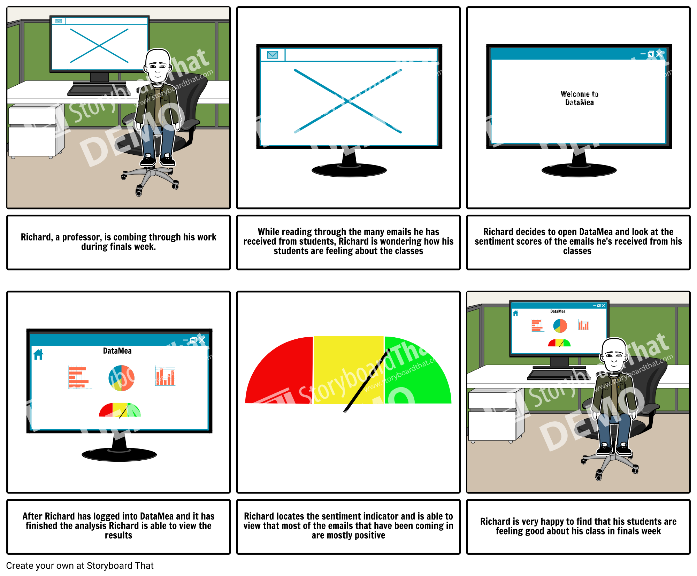
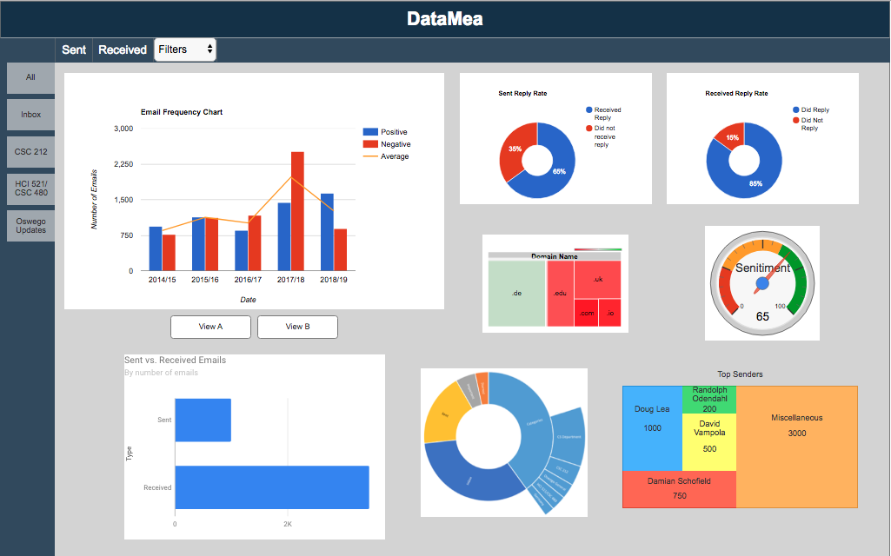

Client: SUNY Oswego
Team: Software Design Students 2018
Role: UI/UX Design & Research, QA Testing
Tools: Axure, Qualtrics
Deliverables: Desktop Application
Target User
The stakeholder who is a professor of computer science is the primary user.
Due to the high volume of emails professors receive per day, it was decided that he
and other professionals would benefit from this desktop application.
Overview
In efforts to provide a visualization of rea-time email traffic
DataMea was created. DataMea is a desktop analytics application developed at State University of NY at Oswego
as part of a software design course. DataMea analyzes the user’s Internet Message
Access Protocol (IMAP) data to display detailed, and sophisticated visualizations of email
activities.This application was developed using JavaFX.
Process

Research
Market research
Before getting into the technical or design aspect of the application, market research was
conducted to see if the dashboard qualities we wish to create already exists and if so
how can we take user feedback they received and apply it to DataMea. Lucky for us there is is very little
information available, most dashboards we found tend to measure the success of your email marketing.
stakeholder Interview
To gather most of our requirements we consulted with the stakeholder, the project manager and
other potential users. This helped us get a better understanding of what features are most important
to the users.
Define
Persona
Creating user persona helped the team to focus on the design process.
| total of 5 were created

Ideate
Use Cases
we created use cases: After a user has installed DataMea on their compatible computer, the user
shall start the program. Then DataMea will verify the user's login information with their respective
credentials. Thereafter, DataMea will open a separate window displaying a tutorial on the software and a progress bar.

Storyboards
We created some storyboards this helps validate whether the concept is working or not, and determine the direction the course is going to take. created using www.storyboardthat.com

Mockup
We created a mockup of what we wanted DataMea to lok like. Ofcourse there were many design changes throughout the development process: created using Axure


User Testing
To ensure the test was realistic, we used the finished application to test for the first usability test.
This revealed how functionally unstable the app was in the development stages.
Between the times spent recovering from bugs and app crashes we were able to find usability issues
related to perceived affordances, layout and search which we latter solved before the release.
To ensure that the application usabity goals were met. Users were asked to complete a survey via Qualtrics
We had over 40 participant use the interface, and record their interactions using an observation log.
The Application is ready to use! Users can now Download.
Install on Mac OS X (version 10.7.3 or greater), Windows (Windows 7 SP1 and newer), and Linux (Ubuntu 10.4 and greater,
and gtk2 2.18 and greater)
Iterate
We gathered some insights about the application which will help in future iterations in development and design.
Bugs:
- Menu/Close button get swapped; The X icon freezes when closing the hamburger menu too quickly (known)
- Attachments chart does not have mouse over effect
- Include a tooltip, in the filter drawer
- Add a "clear all" filter option
- Label the menu items as folders to make it clearer
- Option to swap dashboard color scheme? dark and light theme.
Suggestions:
Reflection
Overall, this was a great experience, designing with limitations can really hinder
how you incorporate aspects of usability.
Notes:
This application was built using JavaFX, therefore there were many design limitations
some choices in graphs and interaction are based the those constraints.
Click Here! to see DataMea
Next Steps
- Start over with front-end languages such as Angular
- Re-design and conduct an A/B test